Guida ad AWS: Hosting di un sito web
Nella nostra guida, esamineremo il processo completo di creazione e
configurazione di un server virtuale utilizzando AWS per ospitare un
sito web.
Offriremo istruzioni dettagliate per completare con successo
l'implementazione del sito su AWS, seguendo le migliori pratiche per
un hosting sicuro e affidabile.
Introduzione
AWS è un leader nei servizi di cloud computing. Questo tipo di computing offre risorse informatiche tramite Internet, anziché attraverso server fisici. Con AWS, le aziende possono accedere a queste risorse su richiesta, pagando solo ciò che utilizzano.
Utilizzare AWS offre vantaggi come scalabilità, sicurezza e flessibilità.
Prerequisiti
Prima di iniziare, è necessario disporre di un account AWS. Se non ne hai già uno, puoi crearne uno gratuitamente sul sito web di Amazon Web Service
Iniziamo
Step-1 Creare un'istanza EC2
Il primo passo per ospitare un sito web su AWS è creare un'istanza EC2 (Elastic Compute Cloud), che è un server virtuale che può essere configurato e personalizzato per soddisfare le esigenze specifiche del tuo sito web. Per creare un'istanza EC2, segui questi passaggi:
-
Accedi alla console di AWS e vai alla sezione "EC2" nel pannello di controllo.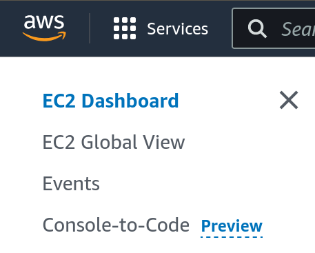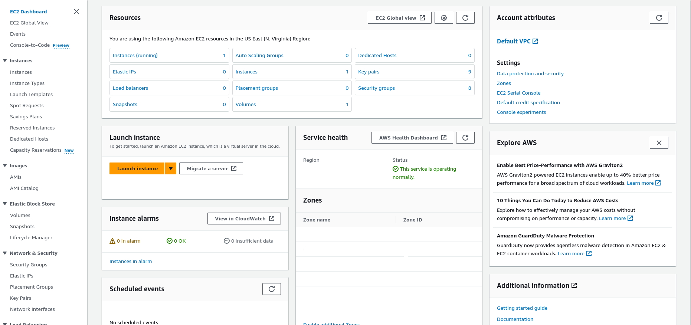
-
Fai clic su "Lancia istanza" per iniziare il processo di creazione di una nuova istanza EC2.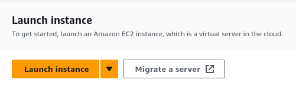
-
Digita il nome che vuoi dare all tua istanza sotto "Name and tag"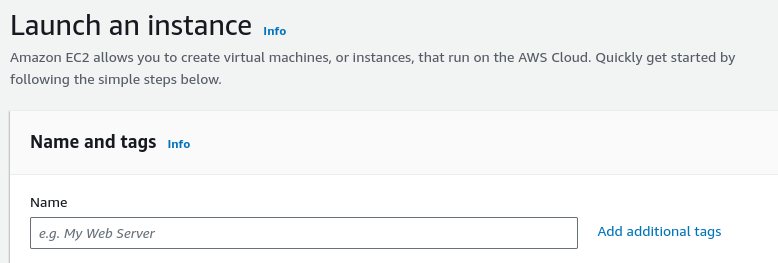
-
Seleziona un'immagine AMI (Amazon Machine Image) per la tua istanza EC2. Puoi scegliere tra una vasta gamma di immagini preconfigurate, tra cui sistemi operativi Linux e Windows, noi sceglieremo il sistema operativo Ubuntu.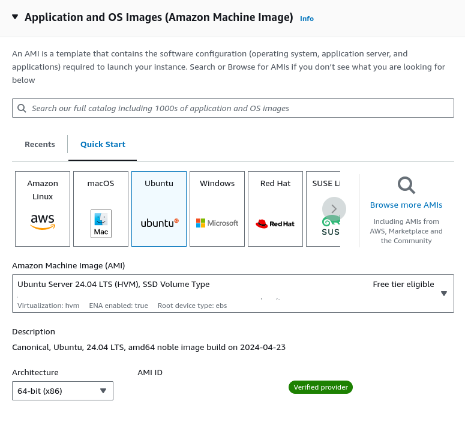
- Seleziona il tipo di istanza e le specifiche hardware che desideri utilizzare per la tua istanza EC2. Puoi scegliere tra una varietà di opzioni di dimensioni e capacità per adattare l'istanza alle esigenze del tuo sito web, noi sceglieremo di lasciare i valori di default
-
Creiamo delle chiavi di accesso per accedere alla nostra
istanza EC2, creeremo delle chiavi di tipo RSA e le salveremo
in un file .pem
Info! È possibile utilizzare anche chiavi.ppk se si vuole utilizzare un client come PuTTY per accedere alla nostra istanza EC2.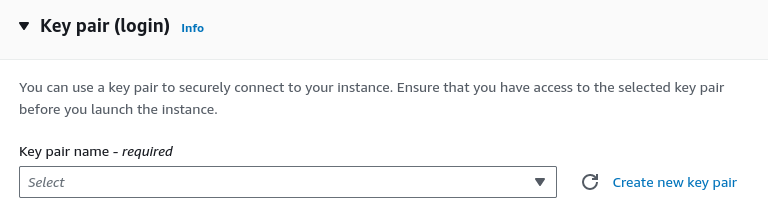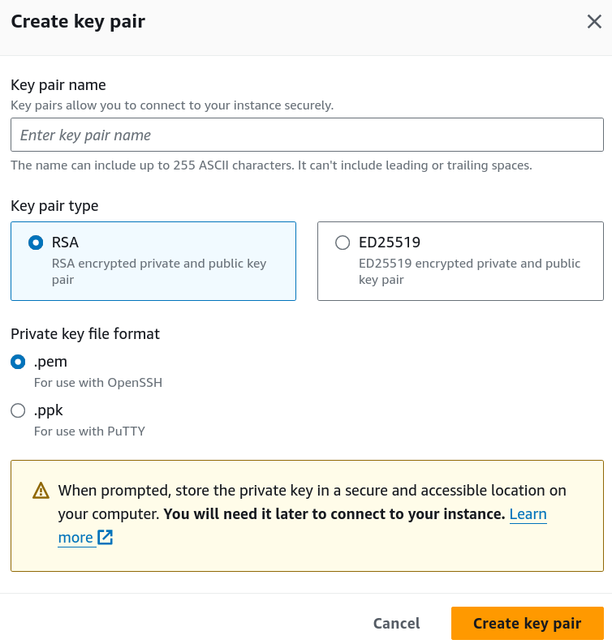InfoATTENZIONE! NON CONDIVIDERE QUESTE CHIAVI CON NESSUNO.
La scelta tra le due chiavi dipende dalle preferenze personali e dal sistema operativo in uso. Per gli utenti abituati al lavoro con il terminale o che utilizzano sistemi operativi basati su Unix, la chiave standard è preferibile. Se si preferisce un'interfaccia grafica user-friendly e si utilizza Windows o altri sistemi operativi, PuTTY potrebbe essere la scelta migliore.
-
Configura le impostazioni di rete e sicurezza per la tua
istanza EC2. Puoi definire regole di sicurezza, gruppi di
sicurezza e altre impostazioni per garantire che la tua
istanza sia accessibile solo da utenti autorizzati, noi
spunteremo le checkbox per permettere l'accesso da SSH, HTTP e
HTTPS.
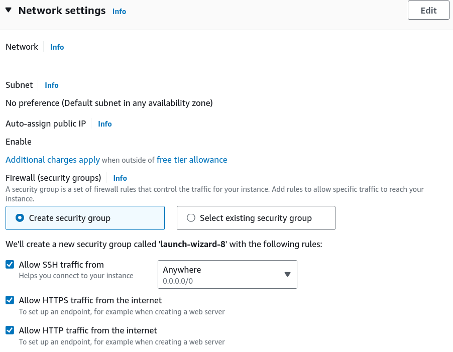
Nel caso tu non abbia spuntato le checkbox, non ti preoccupare, potrai sempre modificare le regole di sicurezza e i gruppi di sicurezza della tua istanza EC2 in qualsiasi momento dalla console di AWS.
- Adesso sei pronto a lanciare la tua istanza EC2. Fai clic sul pulsante "Lancia istanza" per completare il processo.
Step-2 Accedere alla console della tua istanza EC2.
<> Una volta creata la tua istanza EC2, puoi accedere alla console della tua istanza per configurare il server e caricare il tuo sito web. Per accedere alla console della tua istanza EC2, segui questi passaggi:-
Torna alla sezione "EC2" nel pannello di controllo di AWS e fai clic su "Istanze" per visualizzare l'elenco delle tue istanze EC2.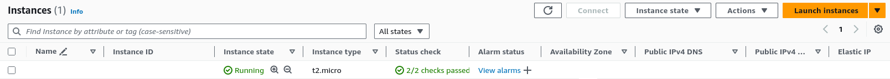
-
Seleziona la tua istanza EC2 dall'elenco e fai clic su "Connetti" per accedere alla console della tua istanza.
-
Seguiamo le istruzioni per connetterti alla tua istanza EC2 utilizzando le chiavi di accesso che hai creato in precedenza.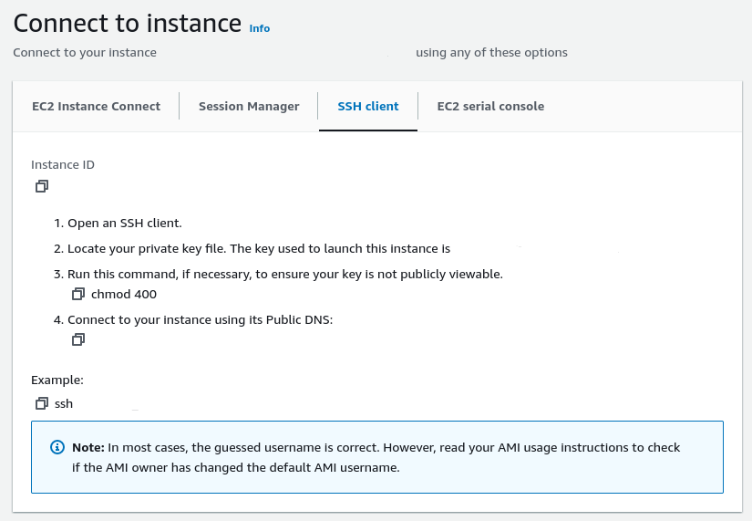
Facciamolo, aprendo il nostro terminal copiamo e incolliamo i comandi che ci vengono forniti.
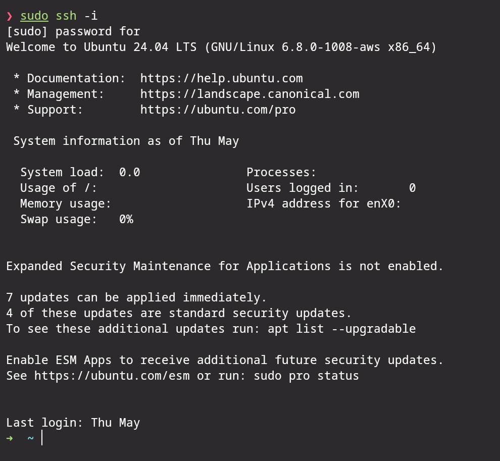Qui digitiamo il comando neofetch per vedere le informazioni del sistema.
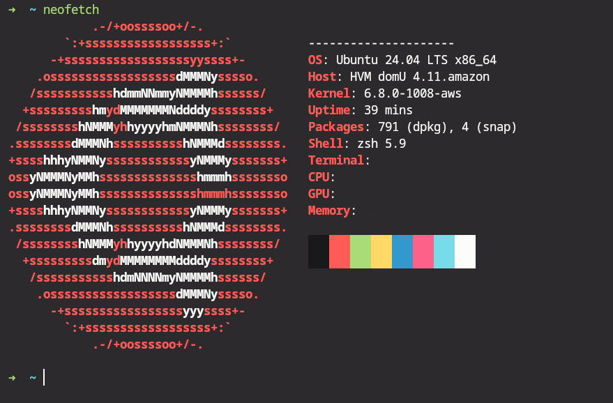